N01
صيغة الليلة من «دلائل الخيرات»
صَلَّى اللهُ عَلَى سَيِّدِنَا وَمَوْلَانَا مُحَمَّدٍ وَعَلَى آلِهِ وَصَحْبِهِ وَسَلَّمَ.
طبعة كلر، ص 27
صفحة الكتاب

صَلَّى اللهُ عَلَى سَيِّدِنَا وَمَوْلَانَا مُحَمَّدٍ وَعَلَى آلِهِ وَصَحْبِهِ وَسَلَّمَ.
اللَّهُمَّ صَلِّ عَلَى (سَيِّدِنَا) مُحَمَّدٍ النَّبِيِّ الْأُمِّيِّ، وَعَلَى آلِ (سَيِّدِنَا) مُحَمَّدٍ.اللَّهُمَّ صَلِّ عَلَى (سَيِّدِنَا) مُحَمَّدٍ عَبْدِكَ وَرَسُولِكَ.

اللَّهُمَّ صَلِّ عَلَى (سَيِّدِنَا) مُحَمَّدٍ وَعَلَى آلِ (سَيِّدِنَا) مُحَمَّدٍ، كَمَا صَلَّيْتَ عَلَى إِبْرَاهِيمَ وَعَلَى آلِ إِبْرَاهِيمَ، إِنَّكَ حَمِيدٌ مَجِيدٌ. اللَّهُمَّ بَارِكْ عَلَى (سَيِّدِنَا) مُحَمَّدٍ وَعَلَى آلِ (سَيِّدِنَا) مُحَمَّدٍ، كَمَا بَارَكْتَ عَلَى إِبْرَاهِيمَ وَعَلَى آلِ إِبْرَاهِيمَ، إِنَّكَ حَمِيدٌ مَجِيدٌ.

اللَّهُمَّ صَلِّ عَلَى (سَيِّدِنَا) مُحَمَّدٍ فِي الْأَوَّلِينَ، وَصَلِّ عَلَى (سَيِّدِنَا) مُحَمَّدٍ فِي الْآخِرِينَ، وَصَلِّ عَلَى (سَيِّدِنَا) مُحَمَّدٍ فِي النَّبِيِّينَ، وَصَلِّ عَلَى (سَيِّدِنَا) مُحَمَّدٍ فِي الْمُرْسَلِينَ، وَصَلِّ عَلَى (سَيِّدِنَا) مُحَمَّدٍ فِي الْمَلَإِ الْأَعْلَى إِلَى يَوْمِ الدِّينِ.
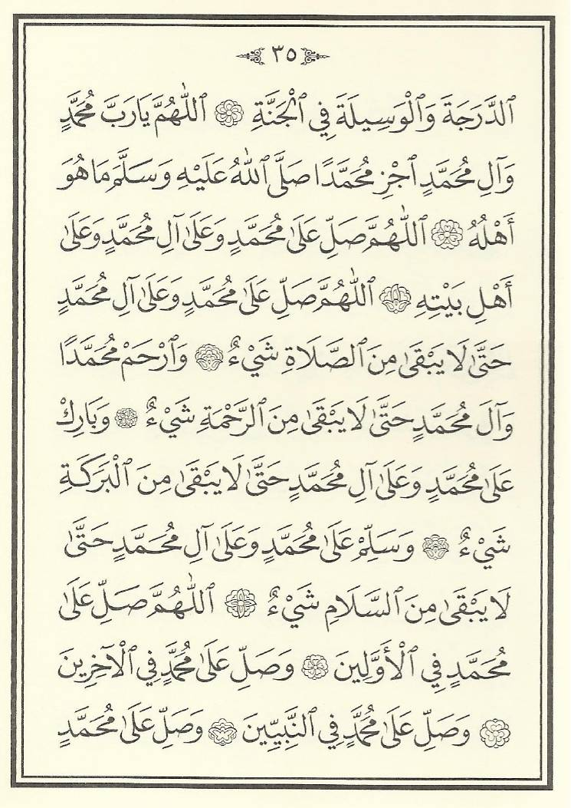
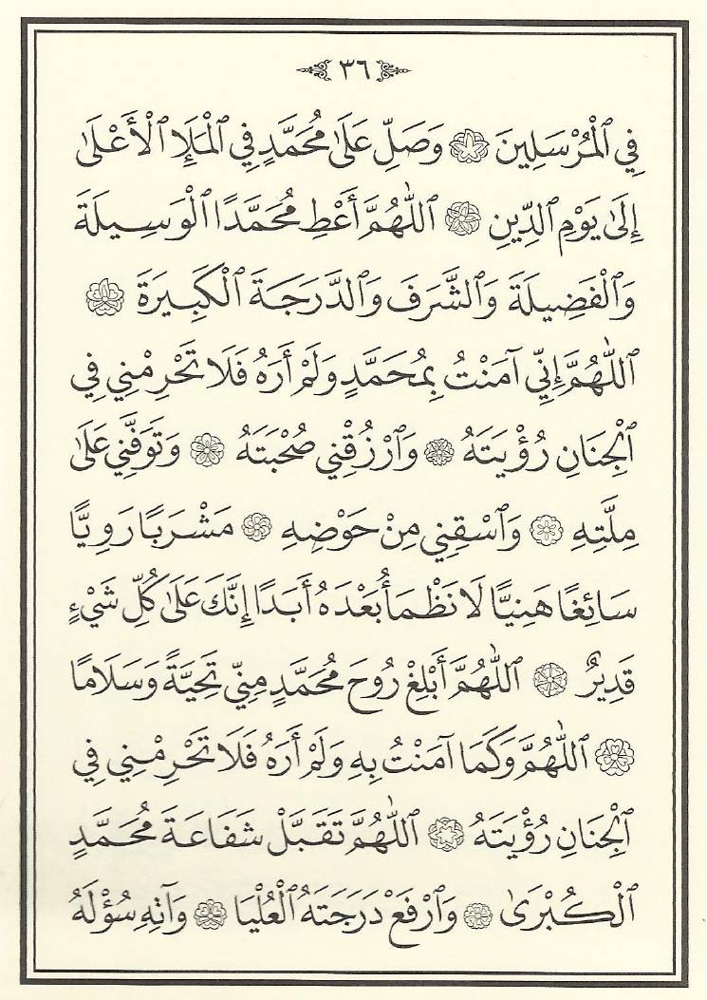
اللَّهُمَّ أَعْطِ (سَيِّدِنَا) مُحَمَّدًا الْوَسِيلَةَ وَالْفَضِيلَةَ وَالشَّرَفَ وَالدَّرَجَةَ الْكَبِيرَةَ.
اللَّهُمَّ إِنِّي آمَنْتُ بِـ(سَيِّدِنَا) مُحَمَّدٍ وَلَمْ أَرَهُ، فَلَا تَحْرِمْنِي فِي الْجِنَانِ رُؤْيَتَهُ، وَارْزُقْنِي صُحْبَتَهُ، وَتَوَفَّنِي عَلَى مِلَّتِهِ، وَاسْقِنِي مِنْ حَوْضِهِ مَشْرَبًا رَوِيًّا سَائِغًا هَنِيئًا لَا نَظْمَأُ بَعْدَهُ أَبَدًا، إِنَّكَ عَلَى كُلِّ شَيْءٍ قَدِيرٌ.اللَّهُمَّ أَبْلِغْ رُوحَ (سَيِّدِنَا) مُحَمَّدٍ مِنِّي تَحِيَّةً وَسَلَامًا.
صَلَّى اللهُ عَلَى سَيِّدِنَا مُحَمَّدٍ عَدَدَ خَلْقِهِ، وَرِضَى نَفْسِهِ، وَزِنَةَ عَرْشِهِ، وَمِدَادَ كَلِمَاتِهِ، وَكَمَا هُوَ أَهْلُهُ، وَكُلَّمَا ذَكَرَهُ الذَّاكِرُونَ، وَغَفَلَ عَنْ ذِكْرِهِ الْغَافِلُونَ.
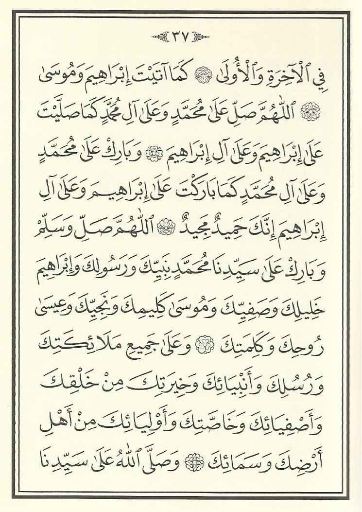
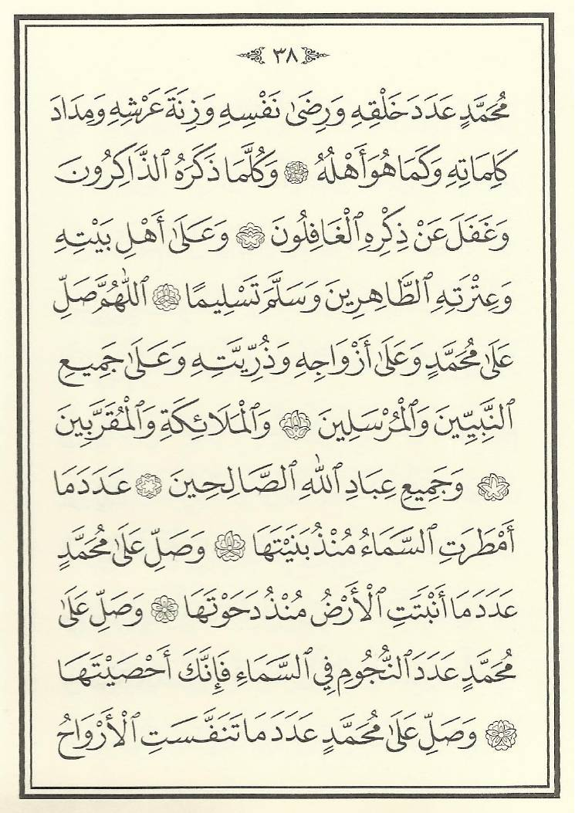
اللَّهُمَّ صَلِّ عَلَى سَيِّدِنَا وَمَوْلَانَا مُحَمَّدٍ سَيِّدِ الْأَوَّلِينَ وَالْآخِرِينَ.اللَّهُمَّ صَلِّ عَلَى سَيِّدِنَا وَمَوْلَانَا مُحَمَّدٍ فِي كُلِّ وَقْتٍ وَحِينٍ.اللَّهُمَّ صَلِّ عَلَى سَيِّدِنَا وَمَوْلَانَا مُحَمَّدٍ فِي الْمَلَإِ الْأَعْلَى إِلَى يَوْمِ الدِّينِ.اللَّهُمَّ صَلِّ عَلَى سَيِّدِنَا وَمَوْلَانَا مُحَمَّدٍ حَتَّى تَرِثَ الْأَرْضَ وَمَنْ عَلَيْهَا، وَأَنْتَ خَيْرُ الْوَارِثِينَ.
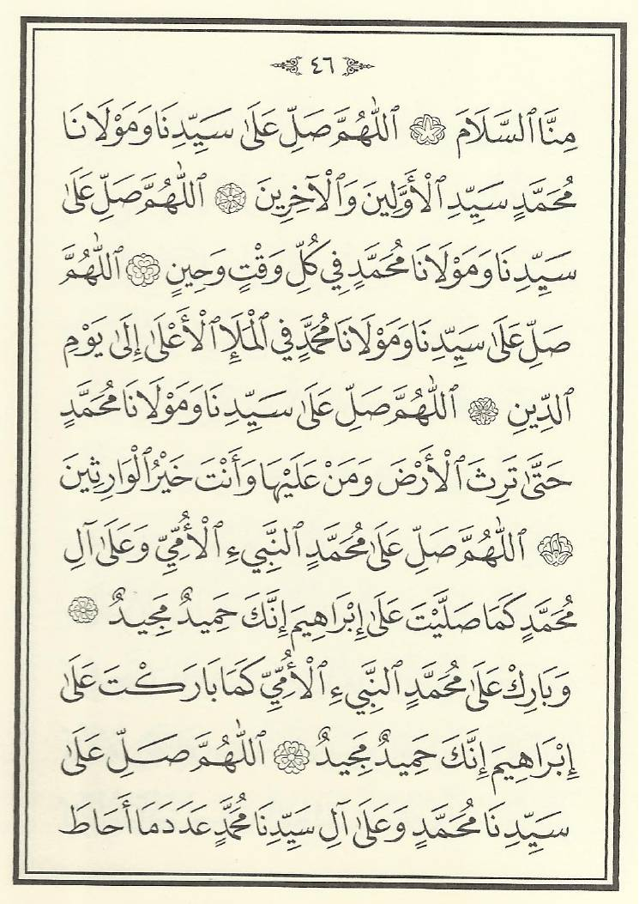
اللَّهُمَّ صَلِّ عَلَى سَيِّدِنَا مُحَمَّدٍ وَعَلَى آلِ سَيِّدِنَا مُحَمَّدٍ عَدَدَ مَا أَحَاطَ بِهِ عِلْمُكَ، وَأَحْصَاهُ كِتَابُكَ، وَشَهِدَتْ بِهِ مَلَائِكَتُكَ، وَارْضَ عَنْ أَصْحَابِهِ، وَارْحَمْ أُمَّتَهُ، إِنَّكَ حَمِيدٌ مَجِيدٌ.اللَّهُمَّ صَلِّ عَلَى (سَيِّدِنَا) مُحَمَّدٍ وَعَلَى آلِ (سَيِّدِنَا) مُحَمَّدٍ، وَعَلَى جَمِيعِ أَصْحَابِ (سَيِّدِنَا) مُحَمَّدٍ.
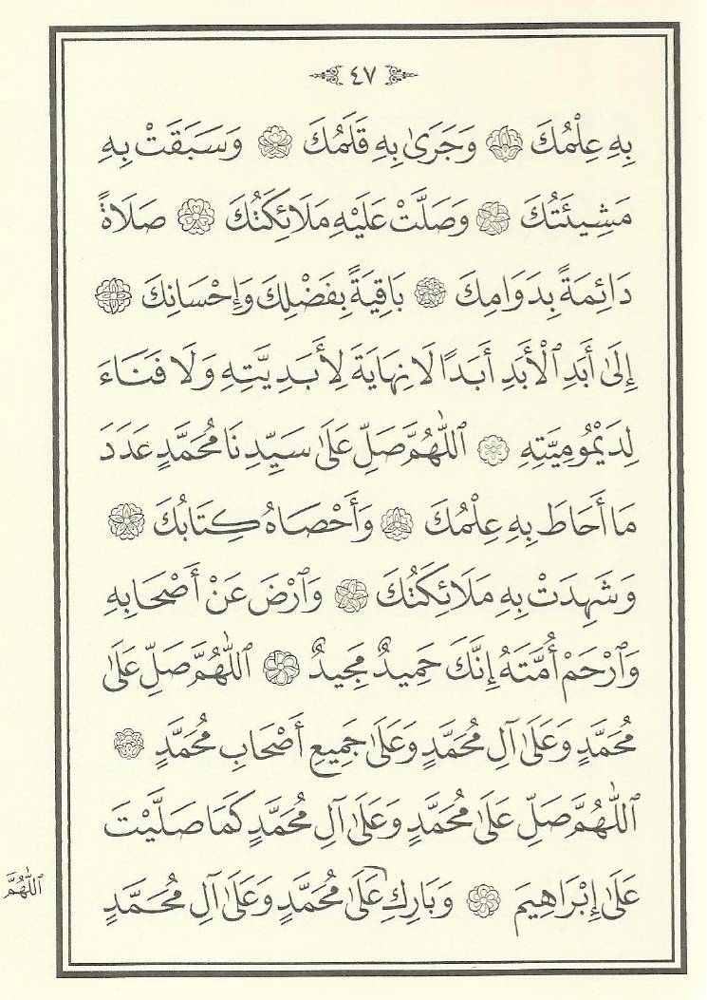
اللَّهُمَّ صَلِّ عَلَى سَيِّدِنَا وَمَوْلَانَا مُحَمَّدٍ عَدَدَ مَا أَظْلَمَ عَلَيْهِ اللَّيْلُ وَأَضَاءَ عَلَيْهِ النَّهَارُ.اللَّهُمَّ صَلِّ عَلَى سَيِّدِنَا وَمَوْلَانَا مُحَمَّدٍ بِالْغُدُوِّ وَالْآصَالِ.
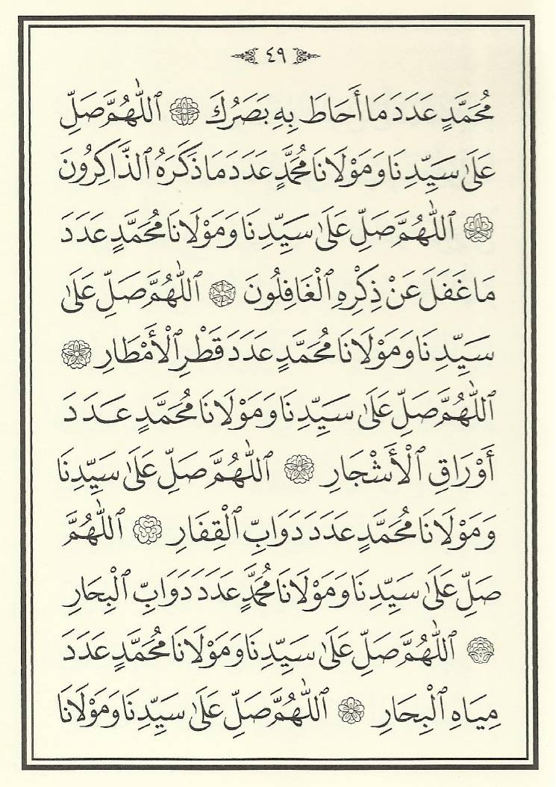
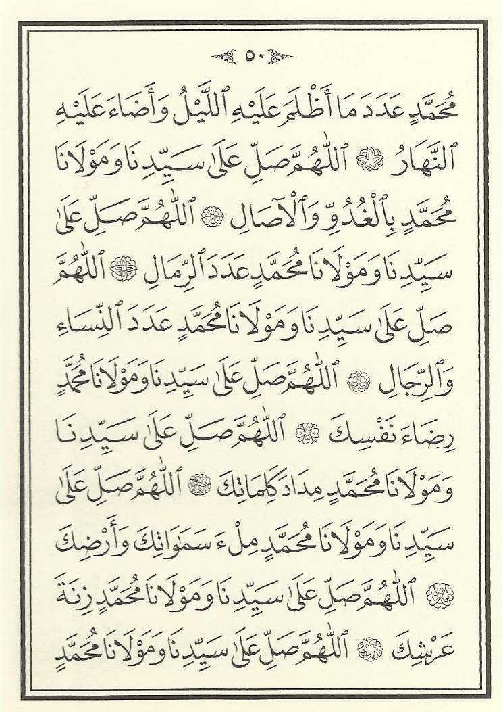
اللَّهُمَّ صَلِّ عَلَى سَيِّدِنَا وَمَوْلَانَا مُحَمَّدٍ عَدَدَ الرِّمَالِ.اللَّهُمَّ صَلِّ عَلَى سَيِّدِنَا وَمَوْلَانَا مُحَمَّدٍ عَدَدَ النِّسَاءِ وَالرِّجَالِ.اللَّهُمَّ صَلِّ عَلَى سَيِّدِنَا وَمَوْلَانَا مُحَمَّدٍ رِضَاءَ نَفْسِكَ.
اللَّهُمَّ صَلِّ عَلَى سَيِّدِنَا وَمَوْلَانَا مُحَمَّدٍ مِدَادَ كَلِمَاتِكَ.اللَّهُمَّ صَلِّ عَلَى سَيِّدِنَا وَمَوْلَانَا مُحَمَّدٍ مِلْءَ سَمَاوَاتِكَ وَأَرْضِكَ.اللَّهُمَّ صَلِّ عَلَى سَيِّدِنَا وَمَوْلَانَا مُحَمَّدٍ زِنَةَ عَرْشِكَ.
اللَّهُمَّ صَلِّ عَلَى سَيِّدِنَا وَمَوْلَانَا مُحَمَّدٍ عَدَدَ مَخْلُوقَاتِكَ.اللَّهُمَّ صَلِّ عَلَى سَيِّدِنَا وَمَوْلَانَا مُحَمَّدٍ أَفْضَلَ صَلَوَاتِكَ.اللَّهُمَّ صَلِّ عَلَى نَبِيِّ الرَّحْمَةِ.اللَّهُمَّ صَلِّ عَلَى شَفِيعِ الْأُمَّةِ.
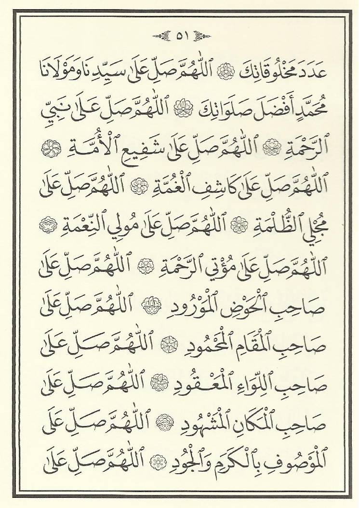
اللَّهُمَّ صَلِّ عَلَى صَاحِبِ الْحَوْضِ الْمَوْرُودِ.اللَّهُمَّ صَلِّ عَلَى صَاحِبِ الْمَقَامِ الْمَحْمُودِ.اللَّهُمَّ صَلِّ عَلَى صَاحِبِ اللِّوَاءِ الْمَعْقُودِ.
اللَّهُمَّ صَلِّ عَلَى الْمَوْصُوفِ بِالْكَرَمِ وَالْجُودِ.
اللَّهُمَّ صَلِّ عَلَى الشَّفِيعِ الْمُشَفَّعِ يَوْمَ الْقِيَامَةِ.
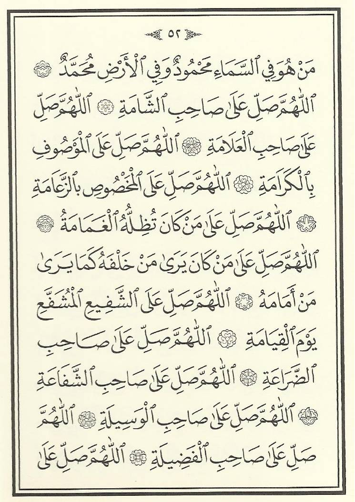
اللَّهُمَّ صَلِّ عَلَى صَاحِبِ الشَّفَاعَةِ.اللَّهُمَّ صَلِّ عَلَى صَاحِبِ الْوَسِيلَةِ.اللَّهُمَّ صَلِّ عَلَى صَاحِبِ الْفَضِيلَةِ.
اللَّهُمَّ صَلِّ عَلَى رَاكِبِ الْبُرَاقِ.
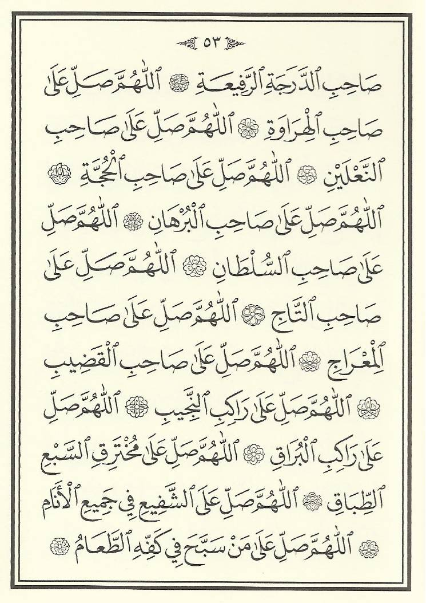
اللَّهُمَّ صَلِّ عَلَى مَنْ بَكَى إِلَيْهِ الْجِذْعُ وَحَنَّ لِفِرَاقِهِ.
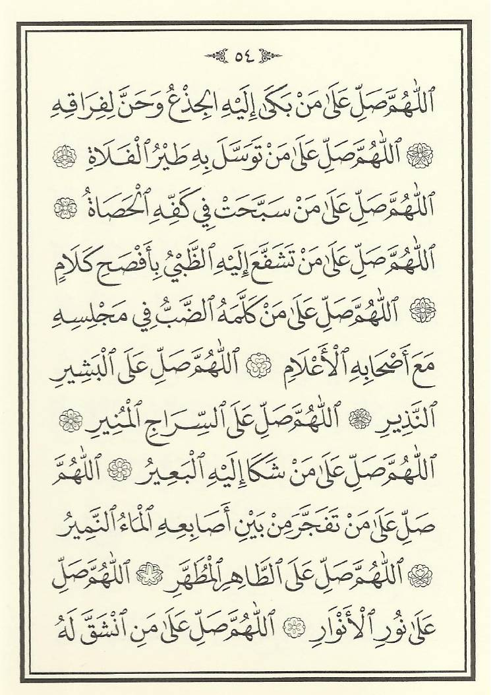
اللَّهُمَّ صَلِّ عَلَى الْبَشِيرِ النَّذِيرِ.اللَّهُمَّ صَلِّ عَلَى السِّرَاجِ الْمُنِيرِ.
اللَّهُمَّ صَلِّ عَلَى مَنْ شَكَا إِلَيْهِ الْبَعِيرُ.اللَّهُمَّ صَلِّ عَلَى مَنْ تَفَجَّرَ مِنْ بَيْنِ أَصَابِعِهِ الْمَاءُ النَّمِيرُ.
اللَّهُمَّ صَلِّ عَلَى مَنِ انْشَقَّ لَهُ الْقَمَرُ.
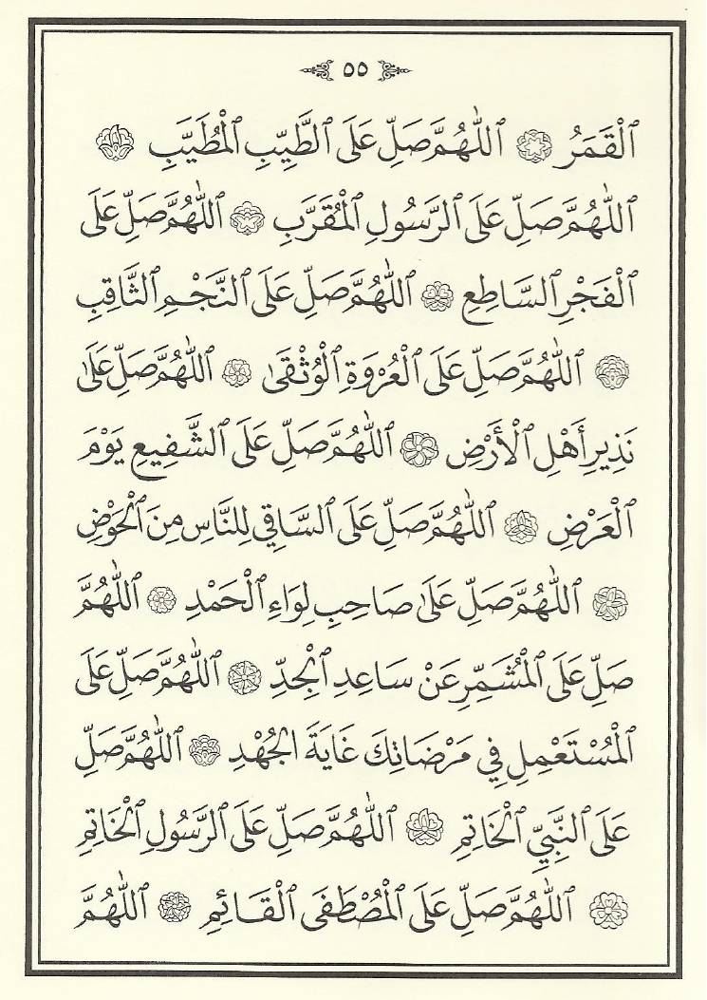